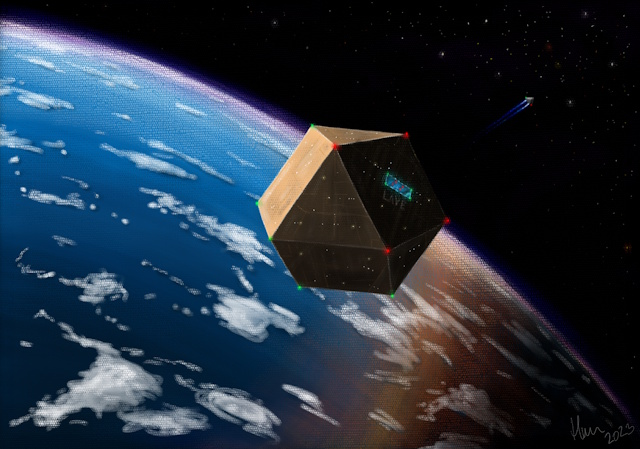
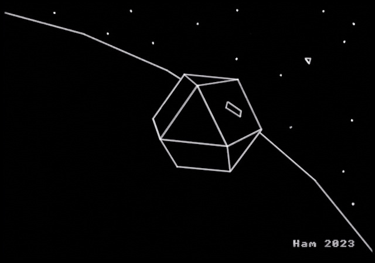
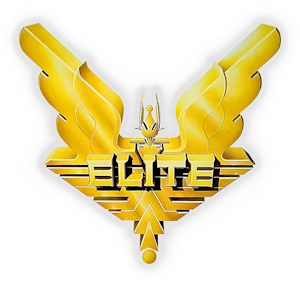
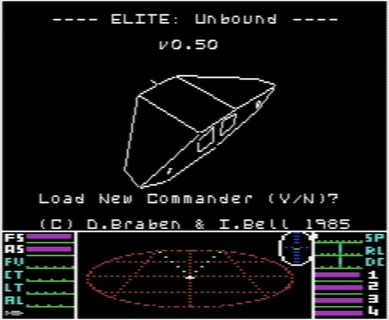
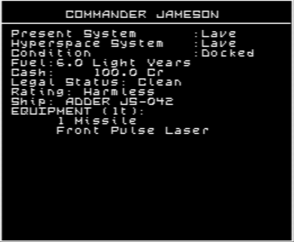
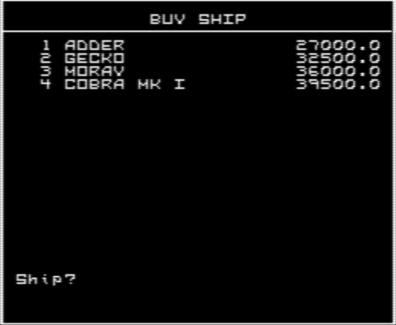
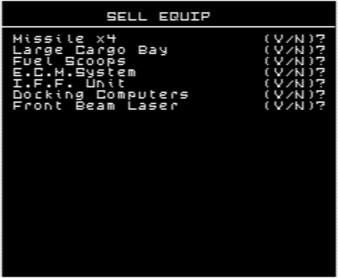
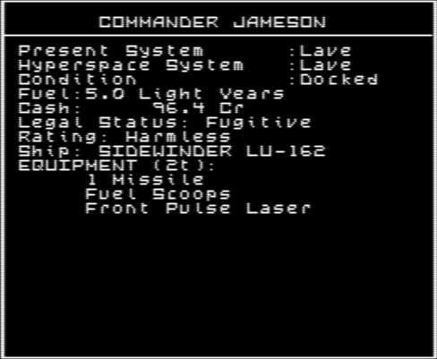
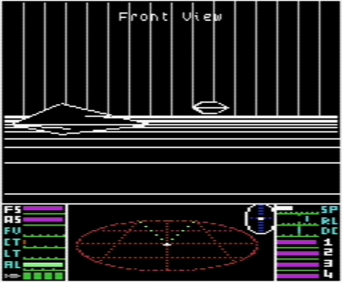

The Beginning
It all began around 1991, when, as a teenager, I discovered a program with the mysterious name E L I T E on my eight-bit Didaktik M, a locally produced clone of the Sinclair ZX Spectrum 48K. The program came on a cassette borrowed from someone. Being a fan of every kind of 3D simulator—most of which used see-through wireframe graphics at the time—Elite immediately captivated me with its 3D models, whose hidden edges were removed from view.
Over time, curiosity began to reveal the game’s true depth. This was not merely a simple 3D shooter in the style of Starion or Starfox. There was something more: a complete simulation of life as a space trader, smuggler, bounty hunter, pirate, miner or interstellar playboy. Whatever you wanted to be, you could become.
The depth with which the game simulated space, spaceflight, combat, economics and trading drew me in completely. That summer, going outside held very little appeal. After a year of playing, my alter ego finally attained the status --- ELITE ---. Fortunately, a detailed guide appeared around that time in the games magazine FIFO, finally answering the questions that had remained unresolved without the original manual.
Back then, rumours of Rock Hermits, generation ships and other mysteries sent me searching across the galaxy. The Rock Hermits eventually turned up; the generation ships never did. A neighbour once claimed to have encountered a ship that remained invisible most of the time and could be seen only on the scanner. According to him, destroying it released a cargo canister, and scooping it revealed something called a Cloaking Device.
Unfortunately, he never reached a station to save his progress. Pirates destroyed his ship on the way, before he could discover how to use the device. At the time, not a word of the story seemed believable. Today, of course, I know he was telling the truth. The ZX Spectrum version contains a special Asp Mk II fitted with exactly such a device. Once the ship has been destroyed and its canister scooped, pressing Y activates the Cloaking Device.
Time passed. Secondary school began, the ZX Spectrum clone gave way to an Amiga 1200, and Elite cast its spell once more—this time as Frontier: Elite II. But that is another story…
That period also brought a C64 and a first encounter with its version of Elite, which is very close to the original BBC Micro release. The ZX Spectrum version differs in several respects and works somewhat differently. This is because its developers received only the procedural universe-generation code from the original creators. Everything else was recreated by playing the original game on the BBC Micro.
That history is also why Elite: Unbound aims to echo the aesthetics of the ZX Spectrum version. The Spectrum edition remains my favourite for one simple reason: it was my first.
For me, the original Elite defined the open-world sandbox built around procedural generation. The game has no ending and no fixed objective beyond attaining ELITE status. Everything else belongs to the player, including the story they choose to create. This is the kind of game I still love and seek out today.
And now it is 2026, and technology has advanced beyond belief. What once existed only in my imagination—as a simple circle representing a planet grew larger and a space station drifted above its horizon—has become a reality that modern Elite: Dangerous renders almost perfectly.
Another dream has come true as well: creating the version of Elite I always wanted and being able to offer it here. Hopefully, you will enjoy it too.

What is Elite: Unbound?
Elite: Unbound is a source-code modification of the original Commodore 64 version of Elite. It is built on the complete and extensively documented BBC Micro and Commodore 64 source code made available by Mark Moxon. Without his work, this project would not have been possible.

The modification runs on a standard Commodore 64 with either a cassette or disk drive; no additional hardware is required. It is distributed as D64 and TAP images for use in a C64 emulator, or for transfer to physical media and use on a real C64.

The main goal of Elite: Unbound is to give player greater freedom, more meaningful choices and a stronger sense of immersion. Ships other than the Cobra Mk III can now be purchased and flown. Each has its own agility, speed, hyperspace range, shield strength and hull durability. Cargo and equipment capacity also varies from ship to ship: every piece of internal equipment has a mass and reduces the space available for cargo, making each loadout a deliberate compromise. Ships also differ in the number of laser mounts and guided-missile pylons they provide.

This also means that player can sell installed equipment.

The player now occupies a more balanced position within the game world. The Energy Bomb—an advantage unavailable to AI ships—has been removed and replaced by an I.F.F. transponder and interrogator for identifying other vessels. Guided missiles have also been reworked, and a hit no longer automatically destroys its target.
A new career can begin in the modest Adder, which is also the default starting ship, or continue in the capable all-round Cobra Mk III. Another option is the Sidewinder: small and fragile, but fast and agile, which explains its popularity among pirates. Its speed may be the only way out of a fight. The choice of ship—and the kind of story it supports—now belongs to the player.

Stations will not launch other vessels while either the player’s ship or an AI ship is blocking the entrance corridor, reducing the risk of collisions. Police ships are naturally exempt from this restriction.
Basic radio communications have been introduced. A station will warn ships that remain in its approach corridor longer than necessary.

AI ship spawning has been reworked so that it is no longer immediately obvious whether a new contact is a trader or a pirate. Space debris—including cargo canisters, wreckage and asteroids—no longer follows the player during a local jump; it disappears instead.
Cargo can now be jettisoned in flight, allowing pirates to decide which spoils are worth keeping. Dumping cargo into open space is, of course, prohibited near most stations.
Every ship, including the player’s, now carries a unique registration ID in the format AA-123. It is used for communication and identification, and can be displayed by the I.F.F. system. Pirates and other questionable operators can conceal their registration, and the player may eventually discover how to do the same. The choice comes with both advantages and consequences.

The post-docking hangar screen familiar from the BBC Micro version has also been restored.

Bounty information now reports the actual bounty value rather than a combined total.
Visual changes include a new white-themed cockpit, the font from the ZX Spectrum version, and single-beam laser fire. Ships are represented as having single-barrel lasers—as suggested by the weapon mounted on the nose of the Cobra Mk III—rather than twin barrels, and the player’s laser now matches the fire used by AI ships. Every laser type has a crosshair, while the revised docking-tunnel effect more closely matches the shape of a station’s docking aperture.
Technical improvements include a frame-rate limiter set to 12.5 FPS on PAL systems, a revised keyboard and joystick handler that allows both input methods to work simultaneously, and faster circle drawing, particularly when rendering planets.
Such an extensive expansion inevitably comes at a cost. Like every home 8-bit computer of its era, the C64 has very little memory to spare. To make room for the new features, all music was removed and the instrument panel was compressed using RLE compression.
Existing save games from Commodore 64 Elite remain compatible. When loaded, they are automatically converted to the Elite: Unbound format.
Features
Highlights of the main Elite: Unbound features.
- New games begin in a puny Adder
- Alternative starting positions supplied as save games in C64 TAP format
- Ability to buy and fly multiple ship types
- Ability to sell installed ship equipment
- An I.F.F. Unit replacing the Energy Bomb
- Unique registration IDs for all AI-controlled ships and the player’s ship
- Realistic missile damage against AI ships, with larger vessels no longer destroyed by a single missile
- In-flight cargo jettison
- A richer pirate experience
- Randomized AI ship spawn positions
- Expanded Status and Inventory screens
- Bounty messages showing only the bounty awarded
- A new white-themed cockpit
- Protected station approach corridors
- Revised station launch and docking procedures that prevent collisions with AI ships leaving the station
- Basic station communications, currently covering loitering warnings and one other special case
- Restored docking hangar scene from BBC Micro Elite
- Concentric rectangular docking-tunnel frames replacing circular rings to better match the station’s docking aperture
- Faster circle rendering, especially for planets
- Improved keyboard and joystick input handling
- A frame-rate limiter
- Disk and tape versions
- Still runs on a stock Commodore 64 without additional hardware
- Compatibility with original Commodore 64 Elite save games
Right on, Commanders!